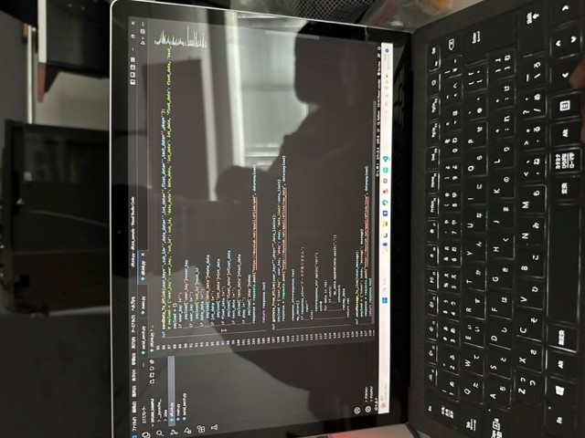

project note
アイデアスケッチ
アイデアスケッチ1
アイデアスケッチ2

概要
IOTを使ったじゃんけん!
～説明～
3つのQRコード（ぐー、チョキ、パー）を読み取る。すると、3Dプリンターで作った手が動き、「ぐー、チョキ、パー」それぞれの形に変化する。もう一方の人も同じことをして互いにじゃんけんをするゲーム
プロセスメモ
1.じゃんけんする手を3Dプリンターで作成!
2.モーターを使って手を動かす←途中まで成功！
3.QRコードを作ってモーターとつなげる
4.モーターを動かすコードを作成
5.全部を繋げて完成！
現在の状況
6/5 3Dプリンターでロボットハンドを作成!
3Dプリンターでロボットハンドを試作したが、想像していたのと異なっていたため、再度作成。完成し次第、糸を通してモータとくっつけ動かしてみる。

6/12 ロボットハンドの制作動かすことをした。ロボットハンドには、ワイヤーが通されていて、それを引っ張ることで指を伸ばすことや曲げることが可能になった。前回は糸を通す穴にサポーターが入ってしまい、糸を通すことができなかったが失敗を重ね、結果サポーターなしで穴をあけることに成功した。
サポーターが入り、失敗した穴
サポーター除去に成功した穴
ロボットハンド
曲げたロボットハンド
6/19 今日は主に、モーターのプログラム、QRコード作成をした。モーターのプログラムとQRコードを作成したが、ロボットハンドと繋げることはできていないため、来週はQRコードを読み取ってモーターが動き、それに伴い手も動くのかというところまで確認する予定。
プログラムコード
>
QRコード
作業内容
>
7/3 ついにロボットハンドが完成できた。しかし、モータの力が足りないの点とモーターの回転の時間を変更できていないため、全然機能していない。一応、完成という形にはするが、来週時間があれば、こまごましたところの訂正、変更を行っていきたい。
今回の作成経過写真

使用したもの
・3Dプリンター
・モーター
・糸（モーターと手をつなぐ）
紹介動画